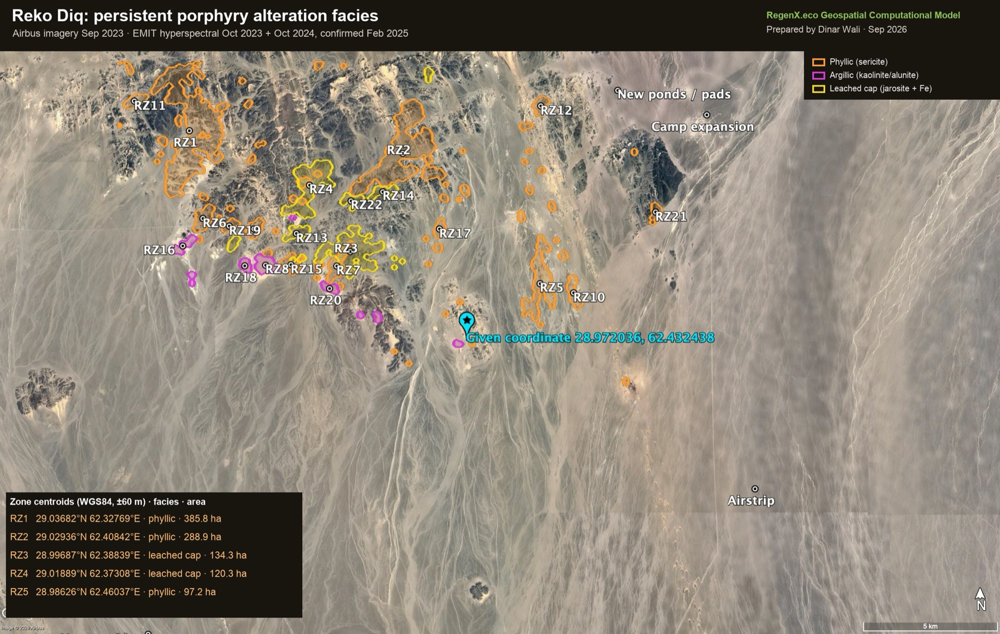
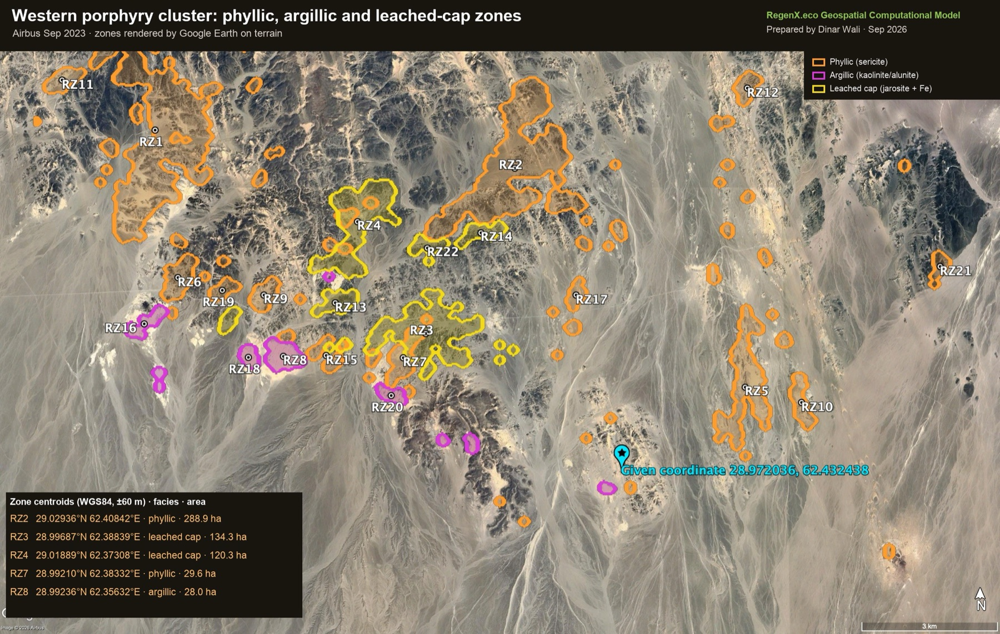
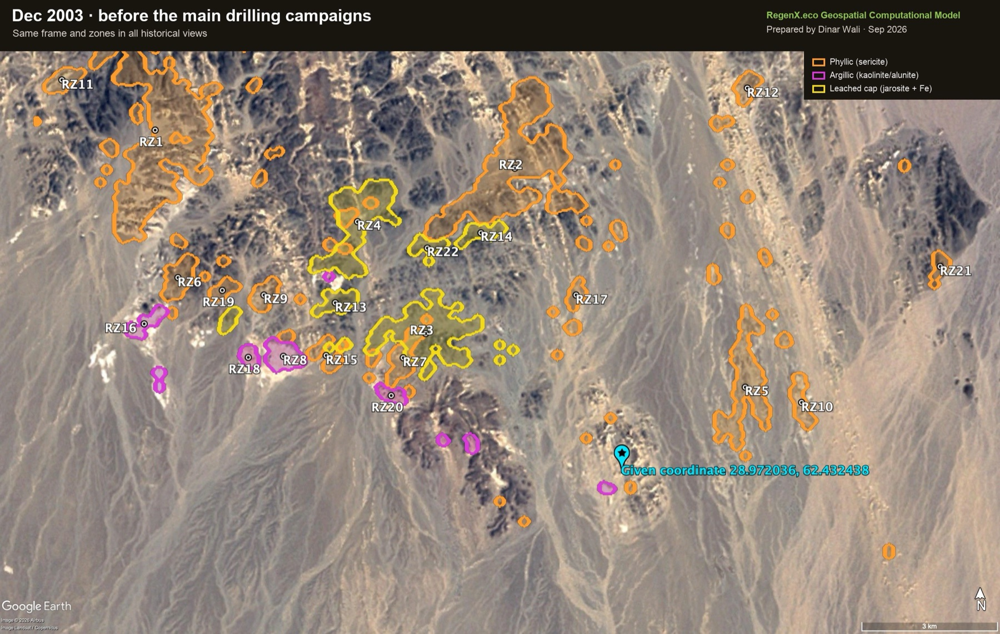
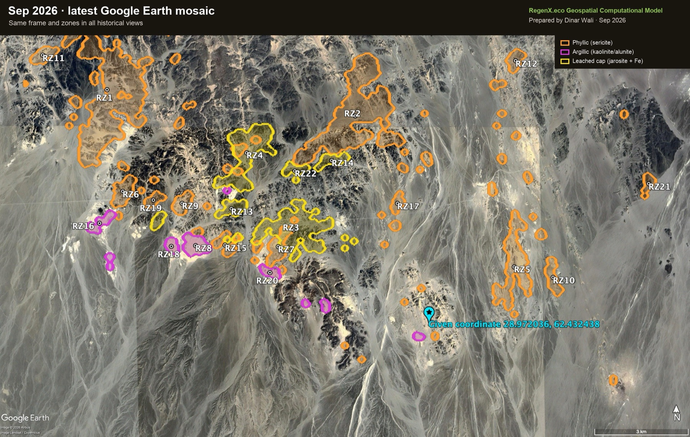
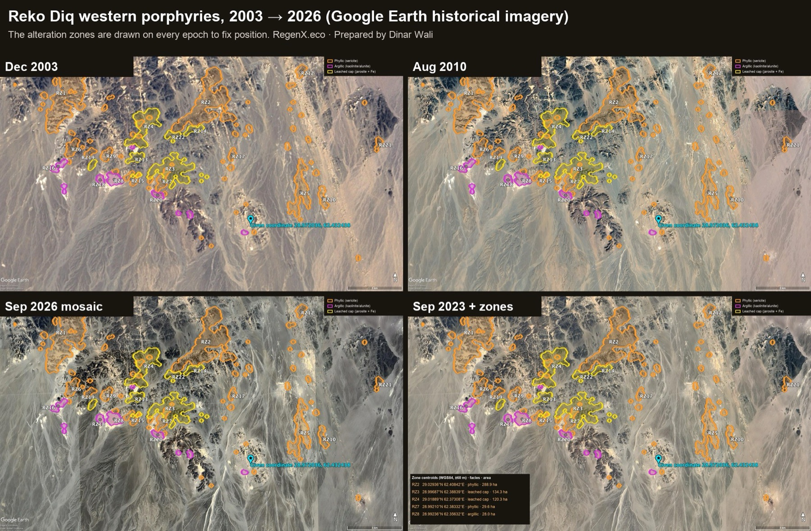
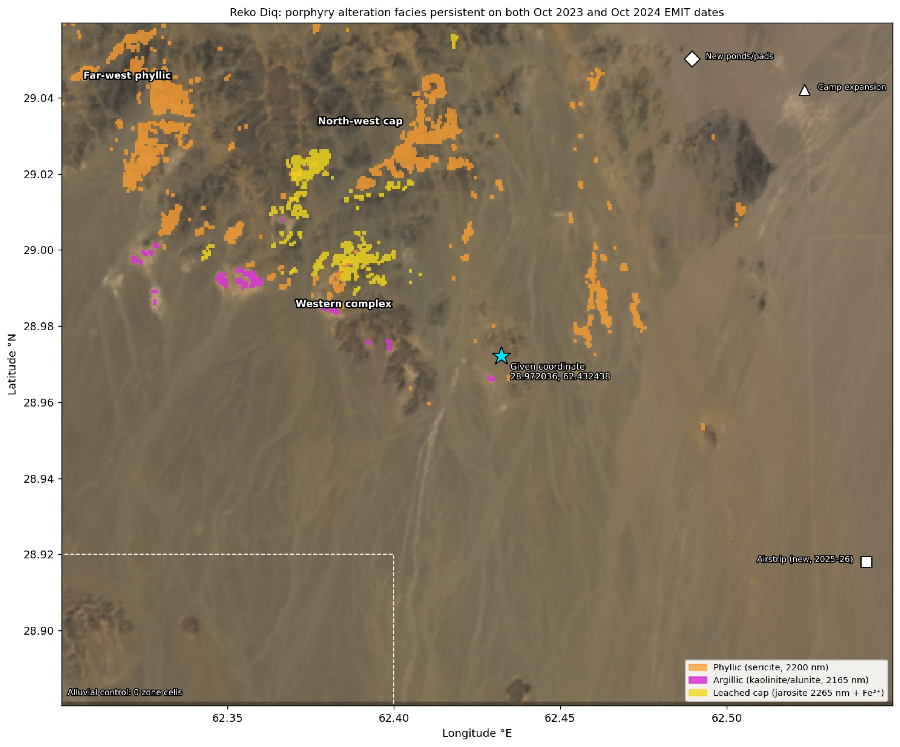
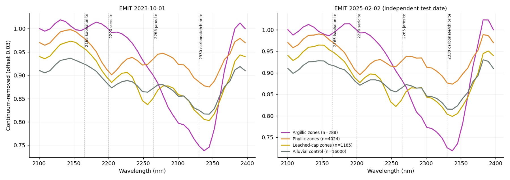
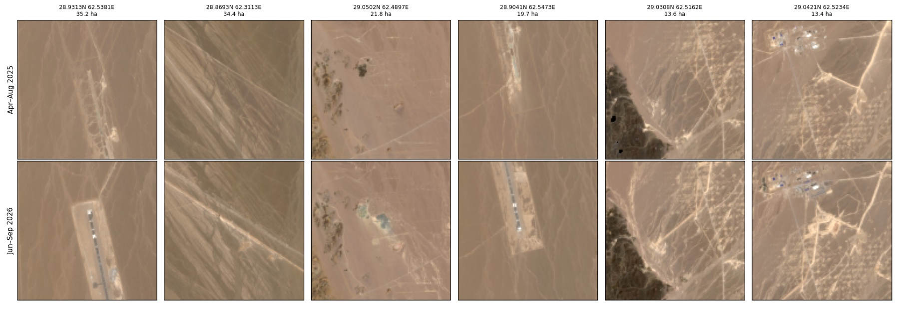

Reko Diq · Chagai District · Balochistan · 28.88–29.06°N, 62.30–62.55°E
Reko Diq copper–gold alteration map
Satellite mapping of the porphyry alteration footprint at Reko Diq, one of the world's largest undeveloped copper–gold deposits. It uses NASA EMIT hyperspectral data on four dates, ASTER, Sentinel-2, Landsat back to 1990, and Google Earth Pro imagery from 2003 to 2026.
RegenX.eco Geospatial Computational ModelPrepared by Dinar Wali30 September 2026
The porphyry halo is mapped from orbit
About 1,460 ha of persistent alteration in zones of 6 cells or more. Phyllic sericite covers 1,068 ha, a jarosite leached cap 319 ha, and argillic kaolinite/alunite 77 ha. It concentrates 3–13 km west and north-west of the given point, over the Western Porphyries.
It passes every test
0 of 16,000 alluvial control cells qualify. An independent February 2025 pass reproduces 79–87% of each facies against 0.2–0.3% of the control. ASTER from 2000–2003 independently confirms the argillic zones (z +5.4).
Construction is visible, 2025–26
Sentinel-2 shows a new airstrip about 1.9 km long at 28.918°N 62.542°E, camp expansion, new ponds and pads, and a new corridor. None appears in 2025 imagery; all appear by mid-2026.
1 · Google Earth Pro imagery, annotated
The alteration zones were loaded into Google Earth Pro as a KML and rendered by Earth itself on the Airbus imagery of September 2023, so every outline follows the terrain. The given coordinate 28.972036°N 62.432438°E sits on a low pale hill cluster on the eastern side of the alteration field.

Lease-scale view. Orange: phyllic (sericite). Magenta: argillic (kaolinite/alunite). Yellow: leached cap (jarosite with ferric iron). Labels RZ1–RZ22 are the zones of 10 ha or more.

The western cluster. The leached caps (RZ3, RZ4) sit inside a broad phyllic ring (RZ2), with argillic patches on its southern and western edges. This zoned pattern is what a porphyry copper system produces.
2 · Historical imagery, 2003–2026


Dec 2003Sep 2026

The same frame in December 2003, August 2010 and the September 2026 mosaic, with the September 2023 base. Exploration tracks and drill pads thicken between 2003 and 2010. Google Earth has no high-resolution capture of the 2025–26 construction over the pits yet, so that part of the record comes from Sentinel-2 (§6).
3 · Ranked alteration zones
A cell joins a facies when its absorption is at least 2.5 robust standard deviations above the scene on both the October 2023 and October 2024 EMIT dates. The 2165 nm band marks kaolinite/alunite, 2200 nm sericite, and 2265 nm jarosite plus a ferric-iron band. Coordinates are WGS84 centroids, accurate to about ±60 m. Zones of 5 ha or more are listed.
Lat °N
Lon °E

All facies over EMIT true colour and a Copernicus DEM hillshade, with the 2025–26 construction features marked. The dashed box is the alluvial control.
4 · Spectral evidence

Continuum-removed EMIT shortwave-infrared spectra. Argillic zones show the kaolinite/alunite doublet near 2165–2205 nm. Phyllic zones show a sharp 2200 nm sericite absorption. Leached-cap zones add a 2265 nm jarosite feature. The alluvial control is flat apart from the 2330 nm carbonate band. The pattern repeats on the independent February 2025 date.
5 · Validation
Test
Result
Alluvial control
0 of 16,000 control cells meet any facies rule.
Independent date (2 Feb 2025)
Phyllic 87.4% of zone cells exceed z 2.5 again (control 0.21%). Argillic 81.2% (0.24%). Leached cap 78.7% (0.31%). Median z inside zones 3.4–4.5, against −0.15 to +0.16 on the control.
ASTER SWIR, 2000–2003 (3 scenes)
A different sensor 20 years earlier: argillic zones show ASTER kaolinite index z +5.4, and phyllic zones ASTER Al-OH z +0.9. The leached cap is not separable in ASTER's broad bands. One 2003 scene was rejected for a clipped band.
EMIT's own mineral library (12 dates)
Jarosite is identified in the same cells on 3 or more dates 39× more often than chance (1,703 vs 43). Kaolinite and alunite labels never appear in the library output, even where the band depths are strong, so the band-depth method is used for those.
Coverage
Retrievals on about 100% of pixels on 11 of 12 dates. It is a hyper-arid desert with no snow and almost no vegetation.
What this measures. The zones map the surface alteration minerals of the porphyry system, the halo around the copper and gold. They don't measure grade. Barrick's published reserves come from drilling: 0.48% Cu and 0.28 g/t Au on its attributable share. The ore sits largely beneath leached caps and alluvium that no satellite sees through.
6 · Construction activity, 2025–26

Sentinel-2 medians, April–August 2025 (top) and June–September 2026 (bottom), at the six largest patches of new bright ground. Left to right: a new airstrip about 1.9 km long; a new linear corridor; new ponds and pads in the north; the south end of the airstrip; new tracks; camp expansion. This matches Barrick's statement that early works began in Q1 2025 with first production targeted for the end of 2028.
Feature
Lat °N
Lon °E
Area ha
Airstrip (north part)
28.93132
62.53812
35.2
Airstrip (south part)
28.90409
62.54728
19.7
New corridor
28.86927
62.31129
34.4
New ponds / pads
29.05021
62.48972
21.8
Camp expansion
29.04206
62.52336
13.4
Landsat from 1990 to 2026 shows the long exploration history. Around the given point, 3–5% of the ground changes brightness in any given epoch against the 2020 baseline, compared with 0.2–0.4% on the control plain.
7 · Context
Reko Diq lies in the Chagai magmatic arc. Mining is planned in two areas. The Western Porphyries pit takes in the H79, H15, H14 and H13 deposits, dated about 12–13 Ma. The Tanjeel pit, about 4 km east, exploits the older H4 centre (about 22–23 Ma). The global resource is reported as 5.9 billion tonnes at 0.41% Cu and 0.22 g/t Au. Barrick's 2025 feasibility study projects 13.1 Mt of copper and 17.9 Moz of gold over a 37-year life. Barrick holds 50%, three Pakistani state enterprises 25%, and the Government of Balochistan 25%. Barrick reports 15 porphyry surface expressions in the lease, 5 of them in the current plan.
The alteration field mapped here runs mostly west and north-west of the given coordinate, consistent with the Western Porphyries. Matching individual zones to named deposits needs the company's deposit map, which is not public in a georeferenced form.
8 · Method and limits
Data.
NASA EMIT L2B mineral ID (12 dates, 2022–2024).
EMIT L2A reflectance: 1 Oct 2023, 1 Oct 2024 and 2 Feb 2025, plus 5 Apr 2023 at partial coverage.
ASTER AST_07XT (2000–2003).
Sentinel-2 L2A: 14 scenes, April 2025 – September 2026, tile 41RMN.
Landsat 5, 7, 8 and 9 (1990–2026).
Copernicus GLO-30.
Google Earth Pro, Maxar and Airbus imagery: December 2003, April 2004, August and November 2010, September 2023 and the September 2026 mosaic.
Rules carried over from Bayan Obo, Hatoun and Chitral. A result must repeat across dates, stay clean on control ground and survive an independent test date. A second sensor must confirm it, and Earth-rendered annotation must show it on real terrain.
Limits.
EMIT pixels are 60 m.
Copper minerals themselves are not detected.
Drill pads and tracks can brighten the surface locally.
The given coordinate lies in a modest part of the alteration field, not at its peak.
I build geospatial computational models that measure what the ground is actually doing. I founded RegenX.eco in 2023 to turn open satellite archives into evidence that governments, lenders and developers can act on. We have applied the model to more than 30 sites across Pakistan, the UAE, Nepal and China, and every number ships with its formula, inputs and limits.